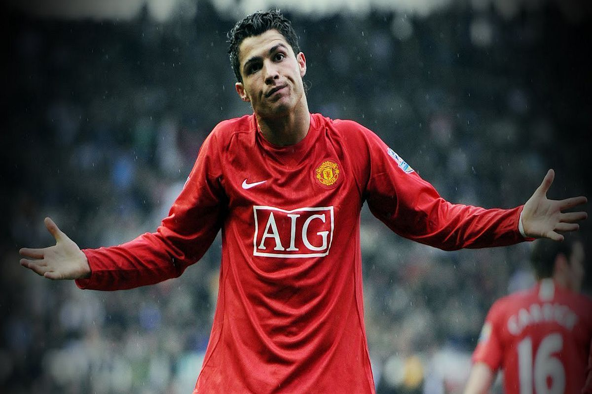
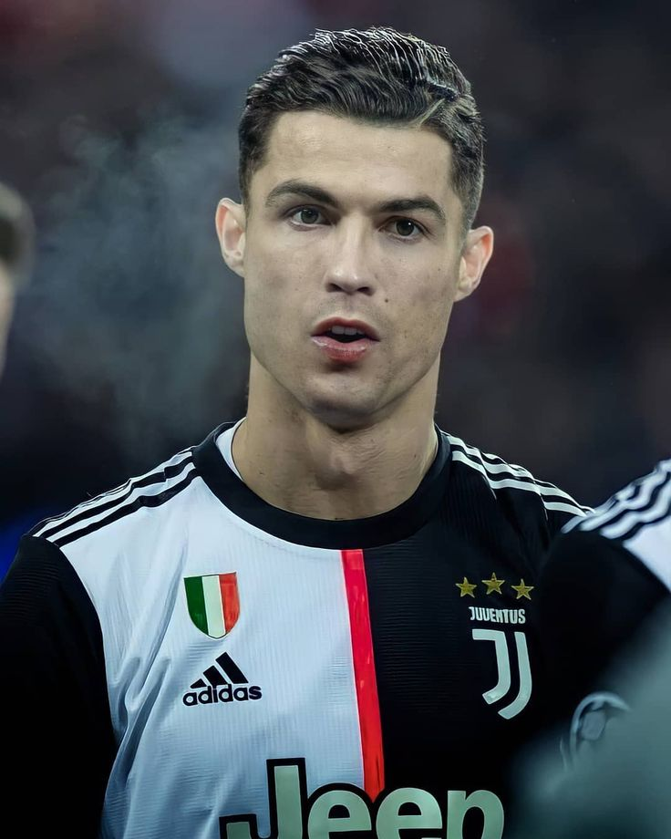
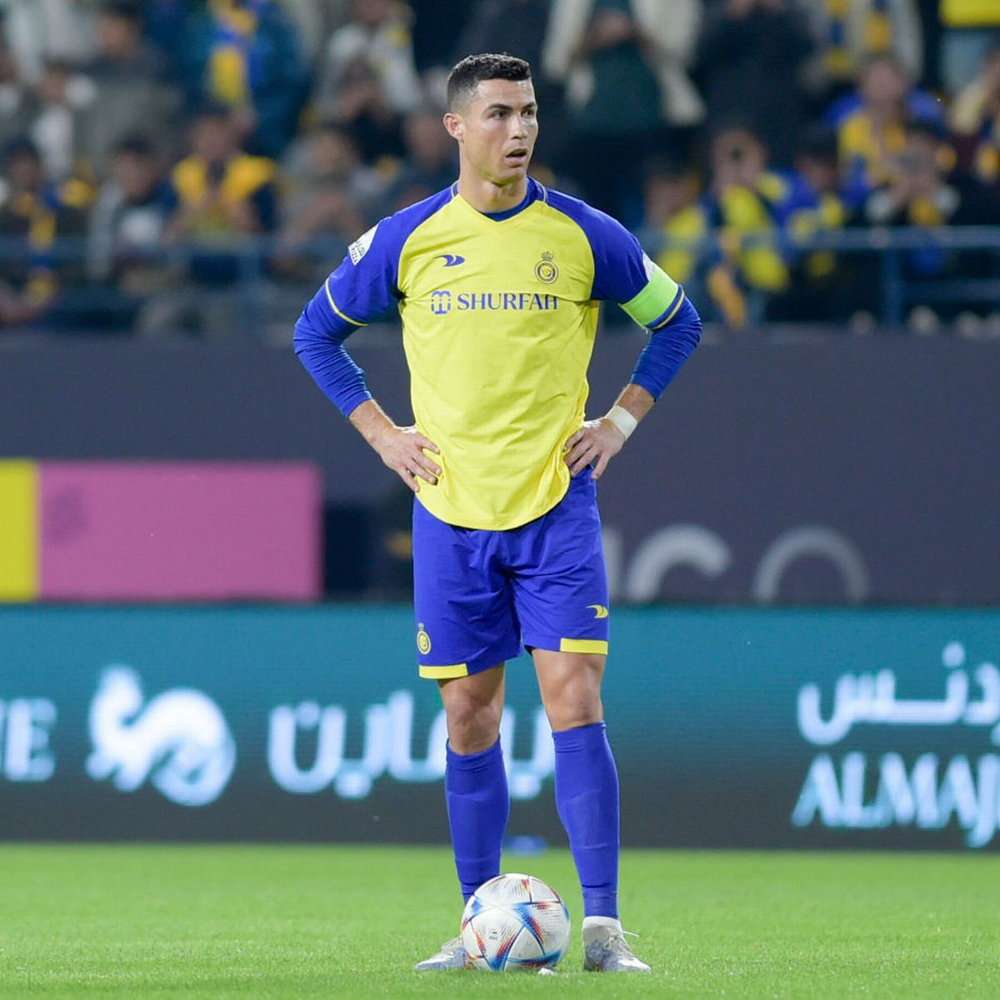
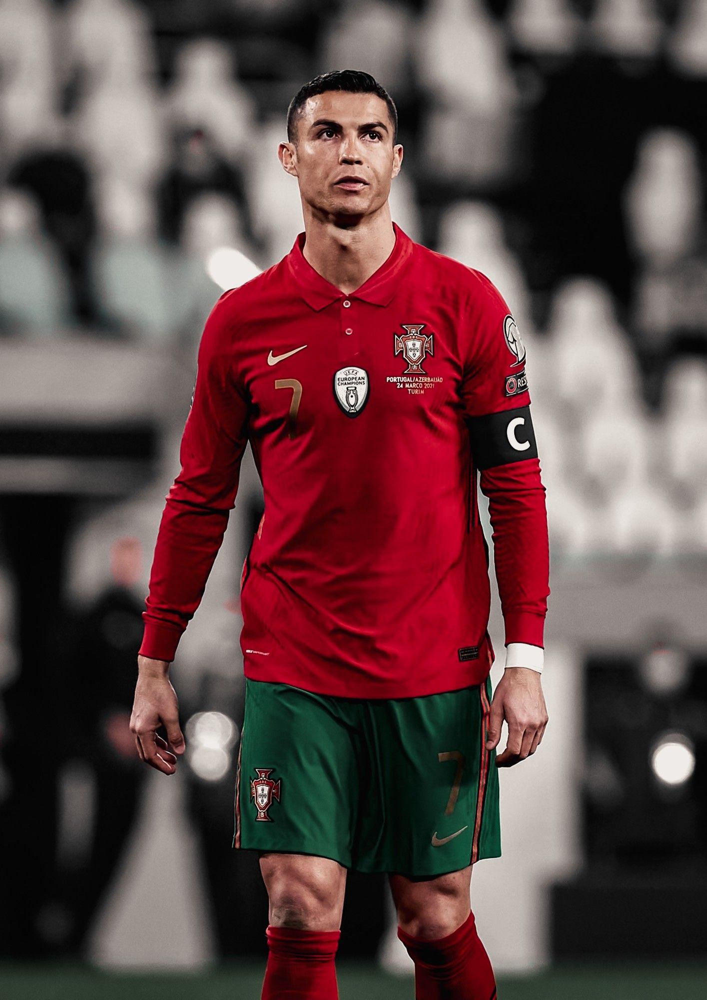

This is how his career took shape

Cristiano Ronaldo's time at Manchester United was a period of tremendous
success and growth for the Portuguese footballer.
He joined the club in 2003 from Sporting Lisbon and quickly established himself as a key player in the team.
Cristiano Ronaldo's time at Manchester United was a period of tremendous success and growth for the Portuguese footballer. He joined the club in 2003 from Sporting Lisbon and quickly established himself as a key player in the team.
During his six seasons at Manchester United, Ronaldo won numerous titles and individual awards. He played a pivotal role in helping the club win three English Premier League titles,
an FA Cup, two League Cups, and the UEFA Champions League in the 2007-2008 season.
He won the prestigious FIFA Ballon d'Or award in 2008, recognizing him as the best player
in the world. He played at united in 2 turns.


Cristiano Ronaldo's transfer to Juventus in 2018 created a lot of excitement and anticipation among fans and football enthusiasts. He joined the Italian club after spending nine successful seasons at Real Madrid.
Ronaldo's arrival at Juventus brought an immediate boost to the team's profile and aspirations. His goal-scoring ability and winning mentality were seen as valuable assets for Juventus, who were aiming for continued domestic dominance and success in European competitions.
During his time at Juventus, Ronaldo showcased his exceptional skills and continued to score goals at an impressive rate. He helped the team secure consecutive Serie A titles in his first two seasons, playing a pivotal role in their success. Ronaldo's presence and leadership qualities had a positive impact on the squad,
inspiring his teammates and elevating the overall performance of the team.

Cristiano Ronaldo joined the Saudi Arabia club as a free agent on a
€200 million per year contract for two seasons.
And it is the current club of cr7.

Cristiano Ronaldo is one of the most iconic players in the history
of the Portuguese national team. He has represented Portugal in numerous
international competitions, including the UEFA European Championship and the FIFA World Cup.
Ronaldo made his debut for the Portuguese national team in 2003 and
has since become their all-time leading goal scorer. He has been an integral part of the team's success,
helping Portugal win the UEFA European Championship in 2016 and the UEFA Nations League in 2019.
Known for his exceptional skills, athleticism, and goal-scoring ability,
Ronaldo has consistently performed at a high level for Portugal.
He has showcased his leadership qualities and has been a source of inspiration for his teammates.